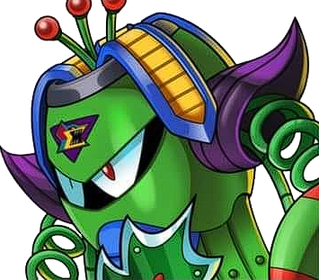
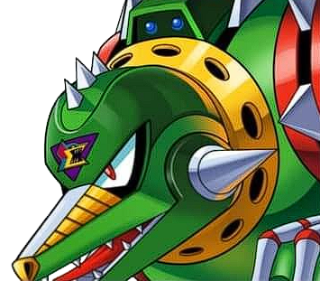
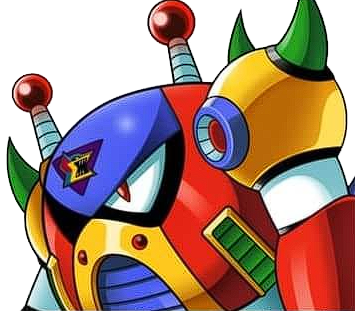
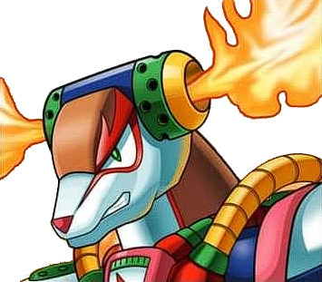
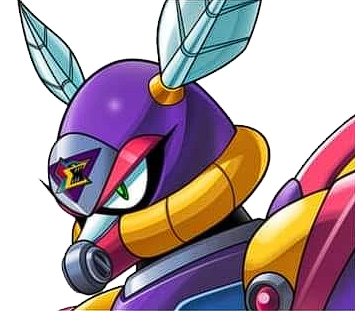
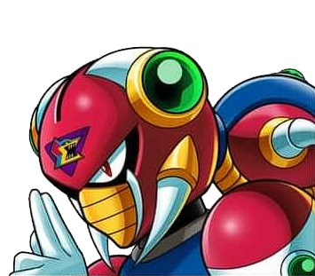
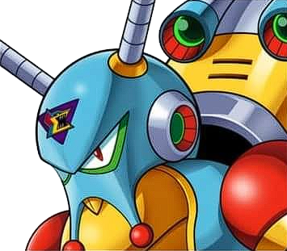
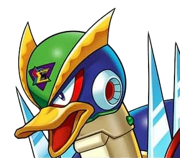

Comece pela parede à esquerda para pegar o Heart Tank. Na área de chuva, use a plataforma móvel para alcançar os canos altos e encontrar o Sub-Tank.
Heart Tank — Escondido acima do início da fase.
Sub-Tank — No topo dos canos durante a chuva.

Wire Sponge
Fraqueza: Sonic SlicerSS
Vine WhipSeed ShotLightning
ESTRATÉGIA: Sem a fraqueza, use disparos carregados e passe por baixo quando ele balançar. Com Sonic Slicer, mantenha distância. Recompensa: Strike Chain.
Fase 2
TANQUE DINOSSAURO
O caminho interno usa plataformas sobre espinhos e Ride Armor. Volte com Air Dash e Strike Chain para alcançar o braço da Second Armor e com Speed Burner carregado para o Heart Tank.
Heart Tank — Acima da parede de espinhos.
AArm Parts — Passagem alta no início do tanque.

Wheel Gator
Fraqueza: Strike ChainSC
Spin WheelBiteAmbush
ESTRATÉGIA: Espere na parede enquanto ele estiver submerso. Desça quando emergir e acerte com Strike Chain. Recompensa: Spin Wheel.
Fase 3
BASE SUBMARINA
Acompanhe o submarino e aproveite os saltos mais altos sob a água. O Heart Tank fica no alto da caverna; o Sub-Tank exige Bubble Splash carregado ou saltos precisos.
Heart Tank — Plataforma elevada após o peixe submarino.
Sub-Tank — No teto da área inundada.

Bubble Crab
Fraqueza: Spin WheelSW
Bubble ShieldCrab ClawShoulder Mine
ESTRATÉGIA: Spin Wheel destrói o escudo e interrompe sua aproximação. Ataque no intervalo entre os saltos. Recompensa: Bubble Splash.
Fase 4
VULCÃO
Suba antes que a lava alcance X. Quebre rapidamente a parede durante a escalada para o Heart Tank. No início, conduza o besouro até o alto e use-o para chegar ao Sub-Tank.
Heart Tank — Atrás da parede na subida da lava.
Sub-Tank — Plataforma alta junto ao besouro.

Flame Stag
Fraqueza: Bubble SplashBS
FireballFlame DashUppercut
ESTRATÉGIA: Bubble Splash interrompe as investidas. Troque de parede e dispare quando ele terminar a escalada. Recompensa: Speed Burner.
Fase 5
FERRO-VELHO
Use Crystal Hunter no inimigo de escudo para transformá-lo em plataforma e alcançar o Heart Tank. O Spin Wheel abre o piso falso que leva ao peitoral.
Heart Tank — Acima da entrada do galpão.
BBody Parts — Sob o piso quebrável; libera o Giga Crush.

Morph Moth
Fraqueza: Speed BurnerSB
Junk StormCocoonLaser
ESTRATÉGIA: Use Speed Burner desde a forma casulo e passe sob o voo da forma adulta. Recompensa: Silk Shot.
Fase 6
BASE MAGNÉTICA
Atravesse os holofotes sem disparar alarmes para preservar o caminho do Heart Tank. O Sub-Tank está em uma passagem alta antes do subchefe da espada.
Heart Tank — Rota secreta sem alarmes.
Sub-Tank — Passagem no teto antes do Chop Register.

Magna Centipede
Fraqueza: Silk ShotSK
TeleportMagnet TailShuriken
ESTRATÉGIA: Silk Shot causa dano alto e reduz o ritmo dos teletransportes. Evite a cauda para não perder habilidades. Recompensa: Magnet Mine.
Fase 7
MINA DE CRISTAL
Leve a Ride Armor para o poço inicial e ejete no salto para alcançar o Heart Tank. Mais adiante, desça pela parede esquerda do grande abismo para encontrar o capacete.
Heart Tank — Longe à esquerda do poço da Ride Armor.
HHead Parts — Corredor secreto no fundo do abismo.

Crystal Snail
Fraqueza: Magnet MineMM
Crystal HunterShell DashTime Slow
ESTRATÉGIA: Magnet Mine separa o chefe da concha. Afaste a concha com dash e acerte-o antes que a recupere. Recompensa: Crystal Hunter.
Fase 8
BASE DO DESERTO
A sequência de moto exige saltos no limite das rampas. Depois dela, use Spin Wheel nos blocos azuis para alcançar o Air Dash. O Heart Tank pode ser obtido com a moto ou Speed Burner carregado.
Heart Tank — Além do corredor de espinhos.
LFoot Parts — Sala de blocos azuis; libera Air Dash.

Overdrive Ostrich
Fraqueza: Crystal HunterCH
Sonic SlicerHigh JumpCharge
ESTRATÉGIA: Crystal Hunter congela o chefe e abre uma sequência segura. Reaplique assim que ele descongelar. Recompensa: Sonic Slicer.
ARQUIVO FINAL
Fortaleza dos X-Hunters
01
Violen Mk. 2
Use Bubble Splash carregado e fique perto para as bolhas atingirem enquanto você desvia da maça.
02
Serges Tank
Use Giga Crush nos canhões e Sonic Slicer carregado por baixo da máquina.
03
Agile Flyer
Magnet Mine é a fraqueza. Nesta fase fica o Shoryuken, exigindo todos os itens e vida cheia.
04
Zero e Sigma
Com as três peças, Zero é salvo. Sem elas, use o X-Buster carregado. Contra Sigma, use Sonic Slicer.
 Heart Tank — Escondido acima do início da fase.
Heart Tank — Escondido acima do início da fase. Sub-Tank — No topo dos canos durante a chuva.
Sub-Tank — No topo dos canos durante a chuva.